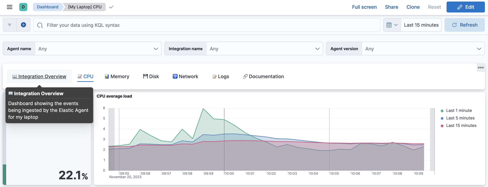

Link panels
editYou can use Links panels to create links to other dashboards or external websites. When creating links to other dashboards, you have the option to carry the time range, query, and filters to apply over to the linked dashboard. Links to external websites follow the externalUrl.policy settings. Links panels support vertical and horizontal layouts and may be saved to the Library for use in other dashboards.

Add a links panel
editTo add a links panel to your dashboard:
- From your dashboard, select Add panel.
- In the Add panel flyout, select Links. The Create links panel flyout appears and lets you add the link you want to display.
- Choose between the panel displaying vertically or horizontally on your dashboard and add your link.
-
Specify the following:
- Go to - Select Dashboard to link to another dashboard, or URL to link to an external website.
- Choose destination - Use the dropdown to select another dashboard or enter an external URL.
- Text - Enter text for the link, which displays in the panel.
- Options - When linking to another dashboard, use the sliders to use the filters and queries from the original dashboard, use the date range from the original dashboard, or open the dashboard in a new tab. When linking to an external URL, use the sliders to open the URL in a new tab, or encode the URL.
- Click Add link.
- Select Save to library if you want to reuse the link in other dashboards, and then click Save.
Add a links panel from the library
editTo add a previously saved links panel to another dashboard:
- From your dashboard, select Add from library.
- In the Add from library flyout, select Links from the Types dropdown and then select the Links panel you want to add.
- Click Save.
Edit links panels
editTo edit links panels:
-
From the panel menu (
 ), select Edit Links.
), select Edit Links.
-
Click the Edit icon (
 ) next to the link.
) next to the link.
- Edit the link as needed and then click Update link.
- Click Save.